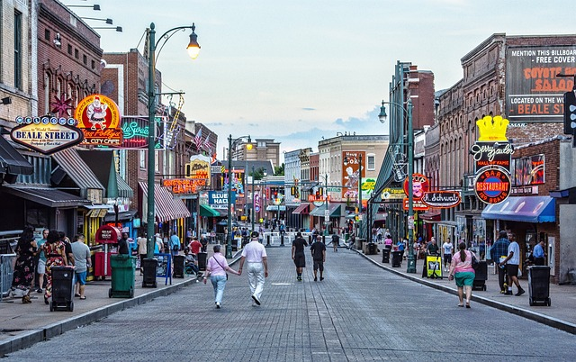
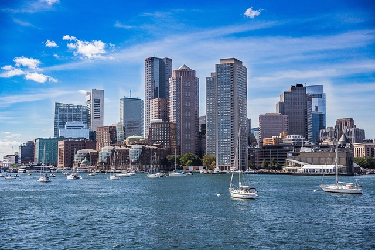
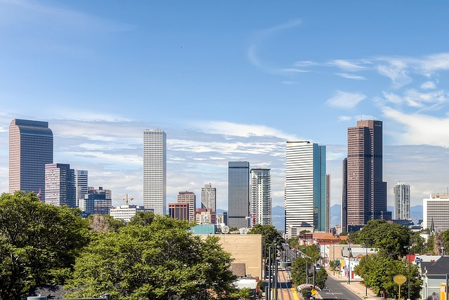
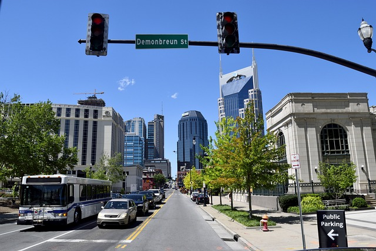
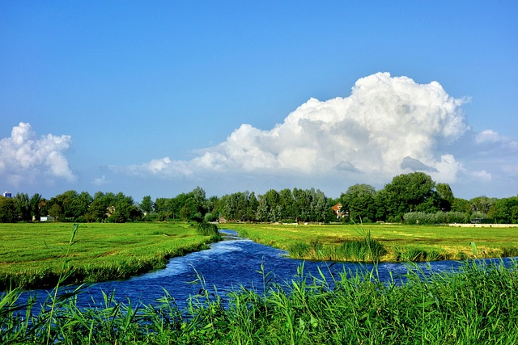
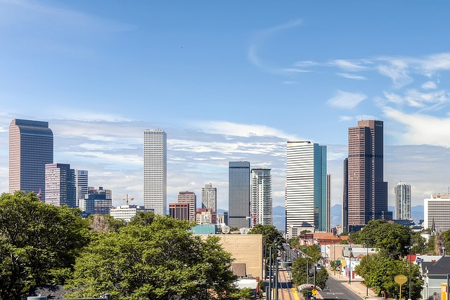
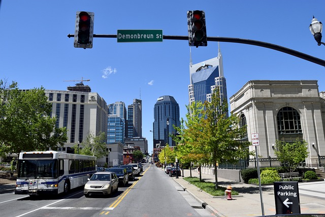
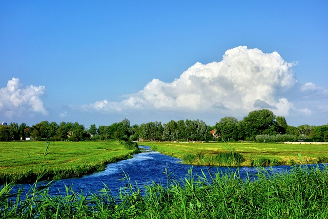

Vacation
Popover Example
Travel
I would like to travel to every state in the United States. The United States of America is a country that is so vast that one visit is never enough! it truly has some great places to explore. While America’s big cities often grab the limelight the nation’s state capitals are also worth a closer look. Although some capitals are also their state’s main tourism hubs – such as Denver, Boston and Nashville – others are smaller but no less lively or captivating. Weekends away in America’s lesser-known capital cities are the next big thing. Montpelier, Vermont, the smallest of all 50 state capitals, is big on arts, music, world beating breweries and eating out, for example, while others like Carson City, Nevada, are popular bases for outdoor activities. Head on down to Tennessee for a taste of the real America and to experience the best of its musical heritage. Tennessee is all about authentic experiences. Whether in the major cities of Memphis, Nashville, Knoxville, or Chattanooga, or in some of America’s most inspiring small towns, like Franklin, Collierville, or Cleveland, Tennessee delivers hospitality and a true American experience. Alternatively, holiday in the state of Kentucky where southern hospitality is what it’s all about in the Bluegrass State. Visitors can taste bourbon, enjoy the races, and explore the great outdoors. Kentucky is home to Mammoth Cave, the longest cave system in the world, as well as thousands of miles of waterways. Explore Washington D.C., the nation’s capital and home to the US President and Congress with many important government buildings and monuments to explore.
  




